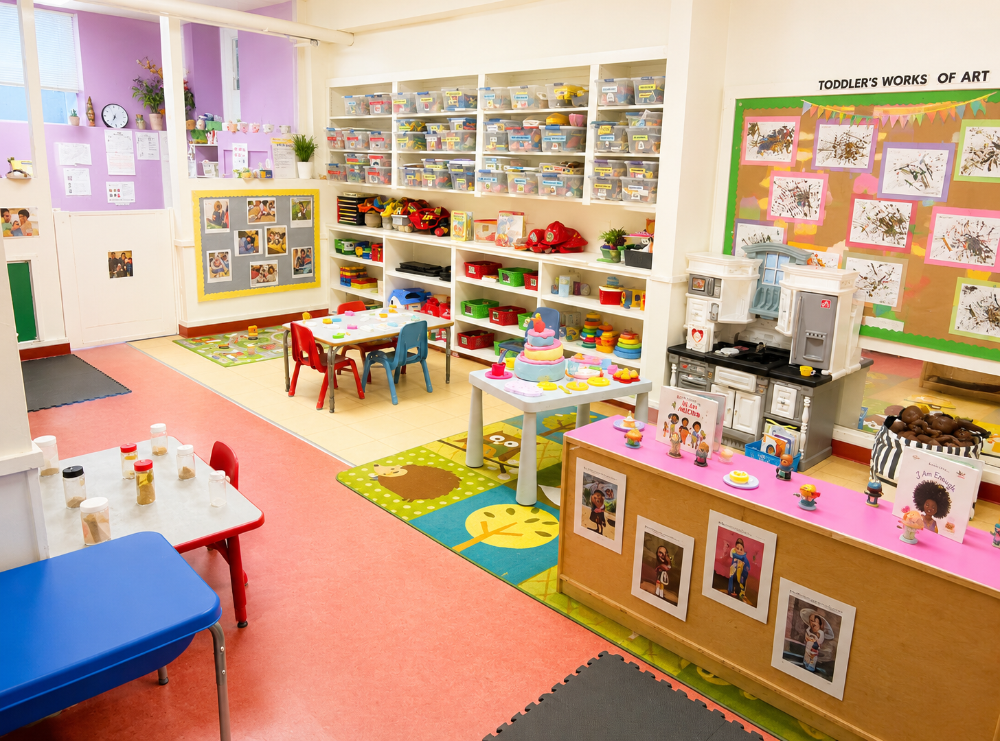

18 Months–2.5 Years
Toddlers
A lively and caring environment where toddlers build independence, communication, confidence and friendships through play.
Welcome to Toddlers
Busy hands, curious minds
Our toddler program supports children during an exciting period of rapid growth and discovery. Toddlers are encouraged to explore, make choices, practise new skills and express their ideas in a supportive environment.
Educators provide predictable routines while allowing plenty of time for active play, sensory exploration, creativity, language development and growing independence.
The Toddler Room has 15 spaces, for children aged from 18 to 30 months (1 1/2 to 2 1/2 years old). With a ratio of 1 educator for every 5 children. The staffing consists of a mix of Early Childhood Educators and Early Childhood Assistants. Children in the Toddler Room are walking and beginning to engage with others in more social ways and our programming is aimed at letting them experience the world around them and making new friends. The Toddler room is the first classroom, on the left after the preschool washroom as you enter the daycare. It is in this room that fond memories begin and the wonderful, strong bonds of friendship are formed; friendships for the children and their parents, creating support in the enriching challenge of raising your children.
Children may experience:
- Creative art and sensory materials
- Dramatic and imaginative play
- Music, dancing and movement
- Early language and social experiences
- Outdoor and gross-motor play
- Opportunities to practise self-help skills
Our Approach
Supporting growing independence
Educators encourage toddlers to participate in daily routines, make choices, communicate their needs and develop positive relationships with children and adults.
Interested in our toddler program?
Contact us to learn more about availability and our waitlist.
Join Our Waitlist